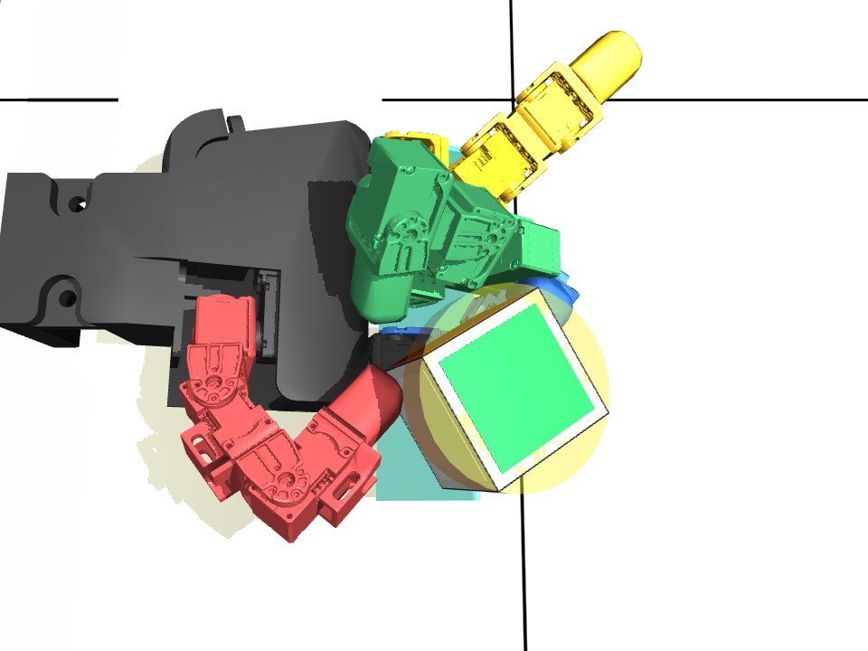

기준 모델 한 조건의 계산 결과다. 실제 로봇 영상이 아니다. 처음 배치부터 마지막 파지까지 큐브 자세를 중간에 초기화하지 않았다. 최종 회전은 약85.94도로, 목표90±5도 범위에 들어왔다. 정확히90도 및 실물 성공은 아직 확인하지 않았다.
파랑=검지, 초록=중지, 노랑=약지, 빨강=엄지. 주황 원통은 다른 손이 윗단을 돌릴 공간이며 오른손 회전과 재파지 중에는 사용해도 된다. 다른 손 접근 전에는 비운다.
6166개 목표, 모델 동작 시간462.45초. 모든1ms 상태에서 원래 동적 기준을 검사했다. 마지막4.05초의 윗단 공간 최소 여유는0.89mm, 윗면 기울기는1.69도다.

관절 목표를 그대로 유지한 하중 시험은0, ±0.003, +0.01N·m를 통과했다. −0.01N·m에서는 몸통이4.38도 움직여3도 기준에 미달했다. 실제 왼손의 힘과 형상, 배치 오차, 다음 회전 연결, 실물 재현은 아직 검증하지 않았다. 모델의0.15N·m 한도는 실제450mA를 환산한 값이 아니다.